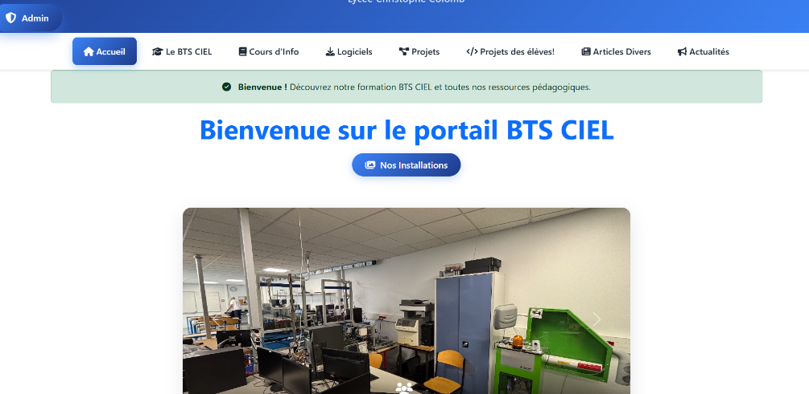
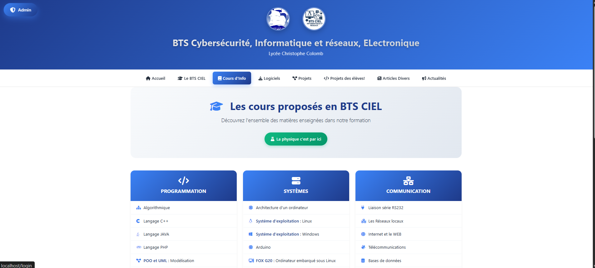
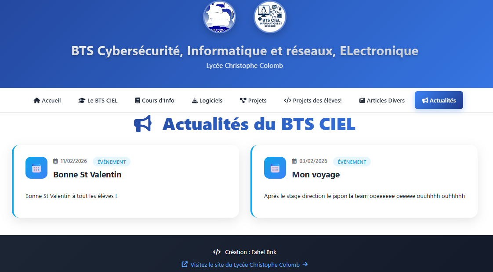
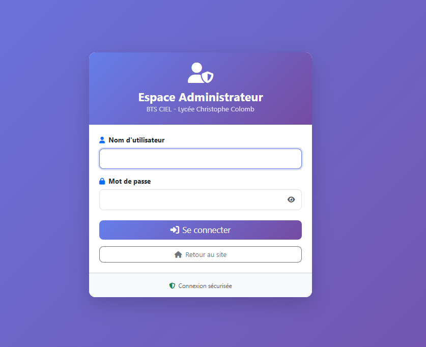
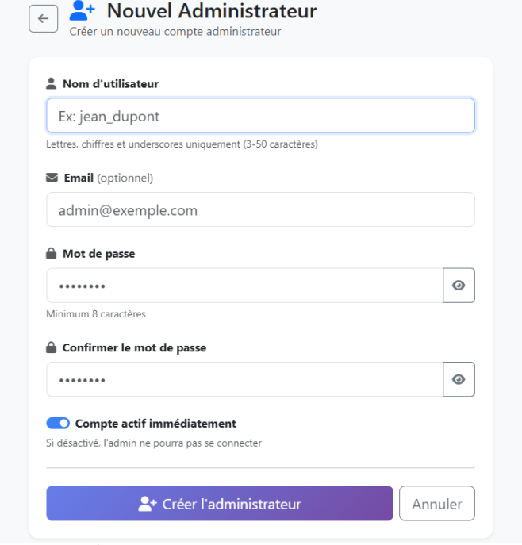

Aperçu visuel du site pédagogique développé en Laravel lors de mon stage au Lycée Christophe Colomb
Voici un aperçu du site BTS CIEL que j'ai développé lors de mon stage au Lycée Christophe Colomb. Le site est divisé en deux parties : la partie publique accessible par les visiteurs et les élèves (accueil, cours, actualités), et la partie administrateur réservée aux enseignants (gestion des fichiers, actualités, comptes admin).
Visible par tous les visiteurs
Réservée aux enseignants
Schéma MySQL

La page d'accueil du portail BTS CIEL accueille les visiteurs avec un message de bienvenue et un carrousel d'images montrant les installations du lycée (salles de TP, équipements). La navbar offre un accès rapide à toutes les sections : BTS CIEL, Cours d'Info, Logiciels, Projets, Articles et Actualités.

La page "Cours d'Info" présente l'ensemble des matières enseignées en BTS CIEL, organisées en 3 catégories avec des cards colorées : Programmation (Algorithmique, C++, Java, PHP, POO/UML), Systèmes (Architecture, Linux, Windows, Arduino) et Communication (Réseaux, Télécommunications, Bases de données).

La page Actualités affiche les événements et annonces publiés par les administrateurs. Chaque actualité est présentée dans une card avec la date de publication, un badge de catégorie (Événement), le titre et le contenu. Le footer affiche "Création : Fahel Brik" avec un lien vers le site officiel du lycée.

La page de connexion de l'espace administrateur a un design dégradé violet distinct du reste du site pour marquer la séparation entre la partie publique et la partie privée. Le formulaire demande un nom d'utilisateur et un mot de passe. Un bouton "Retour au site" permet de revenir à la partie publique.

Depuis le dashboard, un administrateur existant peut créer un nouveau compte admin pour un autre enseignant. Le formulaire demande un nom d'utilisateur, un email optionnel, un mot de passe avec confirmation, et un toggle pour activer ou désactiver le compte immédiatement.